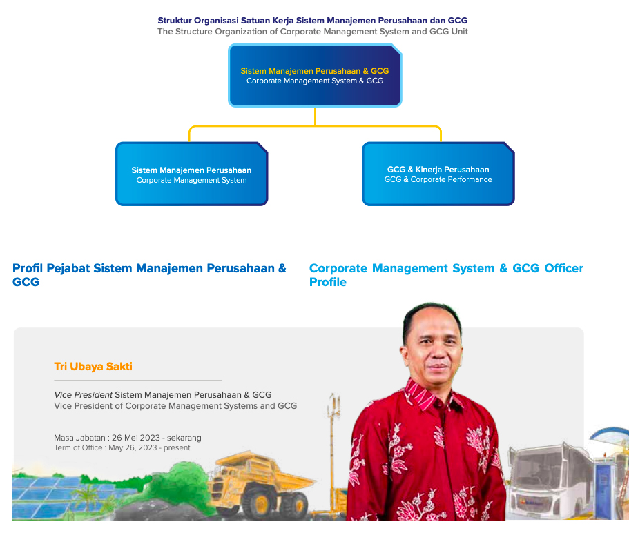

Sistem Manajemen Perusahaan
Dalam pengelolaan Perusahaan, Sistem Manajemen Perusahaan dan GCG menjadi pendukung penting yang berperan dalam mengelola dan mengendalikan sistem yang ada di Perusahaan termasuk melakukan review dan evaluasi terhadap sertifikasi Perusahaan, pemantau GCG dan sistem kinerja perusahaan.
